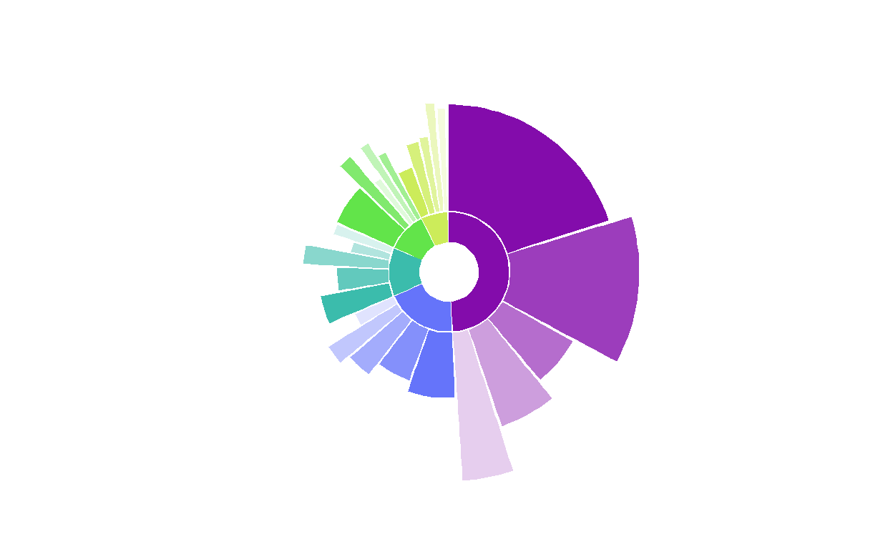

TL; DR
I manually defined coordinates for geom_rect() to create custom sunbursts with ggplot(). Pair this with {ggiraph} package to create an awesome interactive graphic!
Background
Sunbursts in R first caught my eye from the sunburstR package with its amazing interactivity through d3. However, I had trouble customizing it and sought a ggplot alternative. You can create a version using geom_col, as shown in this RStudio Community Post; I chose to go the more complex geom_rect route for more customization options. I was pretty excited when I got it to work!
pretty pumped I got this custom “sunburst”-esque figure to work!! #ggplot #rstats pic.twitter.com/L88IQWoVCs
— Shannon Pileggi (@PipingHotData) January 10, 2020
The data
To illustrate the concept on a publicly available data set, I am using the May 2021 #TidyTuesday salary data. Here, I’ll be looking at the top 5 industries and their top 5 job titles by number of respondents.
The data attributes that work well for this visualization include:
4 to 6 categories, with associated weight or frequency of occurrence
- our categories are the top 5 industries
4 to 6 sub-items within each category, with associated weight or frequency of occurrence
- our sub-items are the top 5 job titles within industry
optional: a metric for the sub-items
- our metric is the median salary for the titles
Getting started
This material was developed using:
| Software / package | Version |
|---|---|
| R | 4.0.5 |
| RStudio | 1.4.1103 |
tidyverse |
1.3.1 |
ggiraph |
0.7.8 |
glue |
1.4.2 |
pals |
1.6 |
Data processing
Import
First, import the data from GitHub.
# import data
survey_raw <- readr::read_csv('https://raw.githubusercontent.com/rfordatascience/tidytuesday/master/data/2021/2021-05-18/survey.csv')
Summarize
Next, summarize the data in terms of the top 5 industries and top 5 job titles. For the job title, we’ll get (1) the percent of respondents with that title, and (2) the median salary for that title.
survey_summary <- survey_raw %>%
# identify top industries
group_by(industry) %>%
mutate(
# number of respondents per industry
n_industry = n()
) %>%
ungroup() %>%
arrange(desc(n_industry), industry) %>%
mutate(
# rank of industry in terms of number of survey respondents
# know a better way to do this bit? pls let me know!
n_industry_rank = as.numeric(factor(-n_industry)),
# very light cleaning of job title
job_title = tolower(job_title) %>%
str_remove_all("[:digit:]+") %>%
str_trim()
) %>%
# reduce to top 5 industries present
filter(n_industry_rank %in% 1:5) %>%
# identify top 5 job titles in each industry
group_by(n_industry_rank, n_industry, industry, job_title) %>%
summarize(
# number of titles within industry
n_title = n(),
# median salary per title
median_salary = median(annual_salary)
) %>%
ungroup() %>%
arrange(n_industry_rank, industry, desc(n_title)) %>%
group_by(industry) %>%
# keep top 5 job titles within industry
slice(1:5) %>%
# recompute number of respondents per industry based on titles selected
mutate(n_industry = sum(n_title)) %>%
ungroup() %>%
mutate(
# relative scale of salary for plotting, on 0 - 100 scale
median_salary_scaled = median_salary / max(median_salary) * 100,
# base n respondents
n_total = sum(n_title),
# percent of respondents per title
pct_title = n_title / n_total * 100,
pct_industry = n_industry / n_total * 100,
# unique job title, as some repeat across industry
title_unique = glue::glue("{str_sub(industry, 1, 3)}: {job_title}")
) %>%
arrange(desc(pct_industry, pct_title))
Here is a preview of our data, which is the basis needed for the sunburst’s custom rectangles.
Assign colors
Pick a color palette for industry, and name the color vector.
colors_industry
Computing or Tech
"#830CAB"
Education (Higher Education)
"#6574FA"
Nonprofits
"#3BBCAC"
Health care
"#62E44A"
Government and Public Administration
"#CCEC5A" Outer ring
Next, I manually define rectangles for the outer ring of the sunburst. I figured out the bits to create custom rectangles from various blog posts that I did not save. It could have been this post on variable width column charts. I got tips on how to angle text for labels from the R Graph Gallery’s circular barplots; sample code is shown below but not implemented in the figure.
The idea of the rectangles’ color assignment is that darker shades represent more frequent or heavier weight items within a category. To create the colors, I concocted a solution to implement a degree of transparency off of the original industry colors based on the total number of sub-categories. Jake Riley shared with me an alternative solution for sub-category color assignment that he contributed on Stack Overflow.
ring_outer <- survey_summary %>%
# join colors to data frame ----
left_join(enframe(colors_industry, name = "industry", value = "color_industry"),
by = "industry") %>%
# arrange descending industry but ascending title
# to compute title colors
arrange(desc(n_industry), industry, n_title, title_unique) %>%
group_by(industry) %>%
mutate(
# enumerate title in industry
id_title = row_number(),
# number of titles per industry
# this can vary - it does not have to be same number per category
num_title = max(id_title)
) %>%
ungroup() %>%
mutate(
# degree of transparency based on number of attributes ----
color_trans = id_title / num_title ,
color_title = map2_chr(color_industry, color_trans, ~ adjustcolor(.x, .y))
) %>%
# this arrange specifies the ordering of the figure
# clockwise ---
arrange(-pct_industry, industry, -pct_title, title_unique) %>%
# counter clockwise ---
# arrange(pct_industry, industry, pct_title, title_unique) %>%
mutate(
industry = fct_inorder(industry),
title_unique = fct_inorder(title_unique)
) %>%
group_by(industry) %>%
mutate(cum_title_pct = cumsum(pct_title)) %>%
ungroup() %>%
mutate(
cum_industry_pct = cumsum(cum_title_pct),
cum_all = cumsum(pct_title)
) %>%
mutate(
# compute coordinates of the rectangles ----
# the 0.3 is an adjustment on the 0 to 100 scale to add a small
# amount of white space between rectangles
rect_x_max = cumsum(pct_title) - 0.3, # xmax ----
rect_x_min = rect_x_max - pct_title + 0.3, # xmin ----
rect_x_mid = (rect_x_min + rect_x_max)/2, # xmid ----
# angles in case adding text to plot, not shown in figures below ----
angle = 90 - 360 * rect_x_mid / 100,
hjust = ifelse(angle < -90, 1, 0),
angle = ifelse(angle < -90, angle + 180, angle),
# label for ggiraph
label_title = glue::glue('{scales::percent(pct_industry/100, accuracy = 1)} ({n_industry}/{n_total}) {industry}\n {scales::percent(pct_title/100, accuracy = 1)} ({n_title}/{n_total}) {job_title} \n {scales::dollar(median_salary)} median salary'))
# view sunburst data
ring_outer %>%
mutate_at(vars(pct_industry,pct_title, median_salary_scaled), scales::number, accuracy = 0.1) %>%
dplyr::select(industry, n_industry, pct_industry, job_title, n_title, pct_title, id_title, num_title, color_trans, color_title, rect_x_max, rect_x_min, median_salary, median_salary_scaled) %>%
DT::datatable()
Combine colors
Combine all industry and title colors in a single vector.
colors_title <- ring_outer[["color_title"]] %>%
set_names(ring_outer[["title_unique"]])
all_colors <- c(colors_industry, colors_title)
Inner ring
Lastly in data prep, we create a smaller data set of rectangle coordinates just for the industries. The requires a dummy extra row to create white space between the first and last categories.
# create an inner ring for industry ----
# there is probably a better way to do this too, please let me know
# if you have suggestions to streamline!
ring_inner <- ring_outer %>%
dplyr::select(industry, pct_industry, n_industry, n_total, rect_x_max, rect_x_min) %>%
# first, get stopping point for each rectangle from least common item ----
arrange(industry, desc(rect_x_max)) %>%
group_by(industry) %>%
# keep one entry per industry ----
slice(1) %>%
ungroup() %>%
dplyr::select(industry, pct_industry, n_industry, n_total, stop = rect_x_max) %>%
# second, get starting point for each rectangle from most common item ----
left_join(
ring_outer %>%
dplyr::select(industry, pct_industry, n_industry, n_total, rect_x_max, rect_x_min) %>%
arrange(industry, rect_x_max) %>%
group_by(industry) %>%
slice(1) %>%
ungroup() %>%
dplyr::select(industry, pct_industry, n_industry, n_total, start = rect_x_min),
by = c("industry", "pct_industry", "n_industry", "n_total")
) %>%
# insert blank row for extra white space where circle starts/stops ---
bind_rows(
tibble(
attr_category = NA,
start = 99.7,
stop = 100.1)
) %>%
mutate(
# compute midpoint for labeling if needed ----
mid = (stop - start)/2 + start,
# a label for industry pct ----
label_industry = ifelse(is.na(industry), NA, glue::glue('{scales::percent(pct_industry/100, accuracy = 1)} ({n_industry}/{n_total}) {industry} '))
)
Non-interactive sunbursts
Variable length sunburst
Finally, we can plot! This first figure has variable length bars, which are represented by the scaled median salary. The outer ring goes from a height of 0 up to a height of the scaled median salary, which is 100 here. Adding extra negative space to the ylim creates the donut in the middle.
# outer ring for job title
ring_outer %>%
ggplot() +
geom_rect(
aes(
ymin = 1,
# variable length bars
ymax = median_salary_scaled,
xmin = rect_x_min,
xmax = rect_x_max,
fill = title_unique
),
show.legend = FALSE
) +
coord_polar() +
theme_minimal() +
theme(
axis.text.x = element_blank(),
axis.text.y = element_blank(),
panel.grid = element_blank(),
legend.position = "none",
) +
# fiddle lower limit here to control donut size
ylim(-40, 100) +
scale_fill_manual(values = all_colors) +
# inner industry ring ----
geom_rect(data = ring_inner,
aes(
# the inner ring spans a height from 0 to -20
ymin = -20,
ymax = 0,
xmin = start,
xmax = stop,
fill = industry
))

Well, it is an example! Not quite as aesthetically appealing as my original example shown in the tweet, but it will do to put code to the page.
Although I think this figure can be eye-catching, it is challenging to make it informative with labeling and still maintain appeal. For this reason, I have omitted labels.
Fixed length sunburst
For a simpler alternative, drop the job title metric of median salary and only show the frequency of industry and title in survey respondents by fixing the rectangle height. This figure can effectively communicate parts of a whole.
# outer ring for job title
ring_outer %>%
ggplot() +
geom_rect(
aes(
ymin = 1,
# fix rectangle height here
ymax = 20,
xmin = rect_x_min,
xmax = rect_x_max,
fill = title_unique
),
show.legend = FALSE
) +
coord_polar() +
theme_minimal() +
theme(
axis.text.x = element_blank(),
axis.text.y = element_blank(),
panel.grid = element_blank(),
legend.position = "none",
) +
# fiddle lower limit here to control donut size
# reduce max lim as well
ylim(-40, 30) +
scale_fill_manual(values = all_colors) +
# inner industry ring ----
geom_rect(data = ring_inner,
aes(
# the inner ring spans a height from 0 to -20
ymin = -20,
ymax = 0,
xmin = start,
xmax = stop,
fill = industry
))

# could add reference line of some sort
# geom_hline(yintercept = 50, color = "gray", lty = 2)
Interactive sunburst
With some very small tweaks to incorporate the {ggiraph} package, we can transform this to an interactive sunburst!
Variable length sunburst
# outer ring for job title
gg_interactive_variable <- ring_outer %>%
ggplot() +
# change 1: use geom_rect_interactive function from ggiraph
ggiraph::geom_rect_interactive(
aes(
ymin = 1,
# variable length bars
ymax = median_salary_scaled,
xmin = rect_x_min,
xmax = rect_x_max,
fill = title_unique,
# change 2: add id for hover over tooltip ---
tooltip = label_title
),
show.legend = FALSE
) +
coord_polar() +
theme_minimal() +
theme(
axis.text.x = element_blank(),
axis.text.y = element_blank(),
panel.grid = element_blank(),
legend.position = "none",
) +
# fiddle lower limit here to control donut size
# reduce max lim as well
ylim(-40, 100) +
scale_fill_manual(values = all_colors) +
# change 3: add interactivity to inner ring ----
ggiraph::geom_rect_interactive(
data = ring_inner,
aes(
# the inner ring spans a height from 0 to -20
ymin = -20,
ymax = 0,
xmin = start,
xmax = stop,
fill = industry,
# change 4: add tooltip to inner ring
tooltip = label_industry
))
# change 5: create interactive version using ggirafe
girafe(ggobj = gg_interactive_variable,
# this option fills tooltip background with same color from figure
options = list(opts_tooltip(use_fill = TRUE)))
Fixed length sunburst
# outer ring for job title
gg_interactive_fixed <- ring_outer %>%
ggplot() +
# change 1: use geom_rect_interactive function from ggiraph
ggiraph::geom_rect_interactive(
aes(
ymin = 1,
# fix rectangle height here
ymax = 20,
xmin = rect_x_min,
xmax = rect_x_max,
fill = title_unique,
# change 2: add id for hover over tooltip ---
tooltip = label_title
),
show.legend = FALSE
) +
coord_polar() +
theme_minimal() +
theme(
axis.text.x = element_blank(),
axis.text.y = element_blank(),
panel.grid = element_blank(),
legend.position = "none",
) +
# fiddle lower limit here to control donut size
ylim(-40, 30) +
scale_fill_manual(values = all_colors) +
# change 3: add interactivity to inner ring ----
ggiraph::geom_rect_interactive(
data = ring_inner,
aes(
# the inner ring spans a height from 0 to -20
ymin = -20,
ymax = 0,
xmin = start,
xmax = stop,
fill = industry,
# change 4: add tooltip to inner ring
tooltip = label_industry
))
# change 5: create interactive version using ggirafe
girafe(ggobj = gg_interactive_fixed,
# this option fills tooltip background with same color from figure
options = list(opts_tooltip(use_fill = TRUE)))
Fin
Like this figure? Use it in your own work? Or have suggestions for improvement in either code or the graphic? Please, let me know!
For fun
I did experiment with some variations on this figure that did not make the cut!
Monday's work 🤔🥰 #rstats #ggplot pic.twitter.com/GbZWLhLeDA
— Shannon Pileggi (@PipingHotData) February 4, 2020